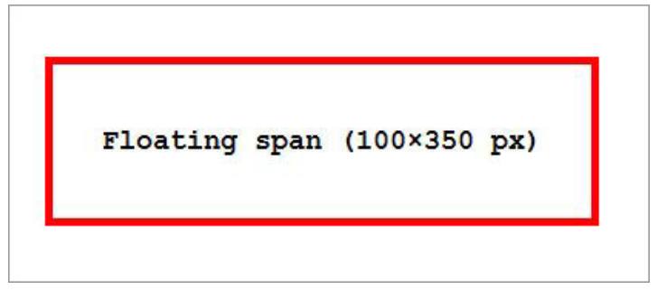

1. Which elements don’t float? An absolute or fixed positioned element won’t float. So the next time you encounter a float that isn’t working, check if it is in position:absolute or position:fixed and apply changes accordingly.
When an element is tagged "float" it runs to either the left or the right basically until it hits the wall of its container element. Alternatively, it will run until it hits another floating element that has already hit the same wall. They’ll keep piling up side by side until the space runs out, and newer incoming ones will be moved down. Floating elements also won’t go above the elements before it in the code, something you need to consider before coding a “Float” after an element to the side of which you want to float it.
Here are two more things that happen to a floating element depending on what type of element is being kept floating:
Ever wondered why suddenly you’re able to assign height & width to a floating span? That’s because all the elements when floated will get the value block for its display attribute (inline-table will get table) making them block level elements.
Usually, when you don’t specify width to a block element, its width is the default 100%. But when floated, that’s no more the case; the block element’s box will shrink until its contents remain visible.
Usually, when you don’t specify width to a block element, its width is the default 100%. But when floated, that’s no more the case; the block element’s box will shrink until its contents remain visible.